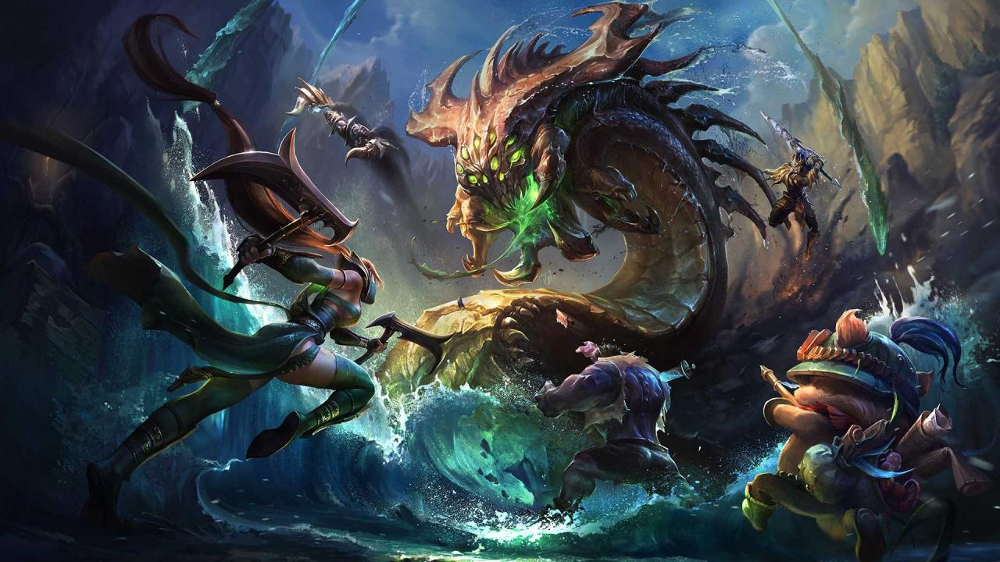

Ik ben begonnen met gamen rond mijn 5 jaar. Mijn eerste console was een sega en mijn favoriete spel was Alex the kid. Maar ik mocht toen niet uren spelen aan een stuk, omdat het schadelijk is voor mijn ogen en ik zat heel dicht tegen de televisie. Met de tijd begon ik meer en meer te spelen op computer het werd verslavend, waardoor ik mijn schoolwerk vlug maakte met veel fouten. Toen ik afstudeerde van middelbaar verminderde mijn verslaving en begon ik andere intresses te hebben.
